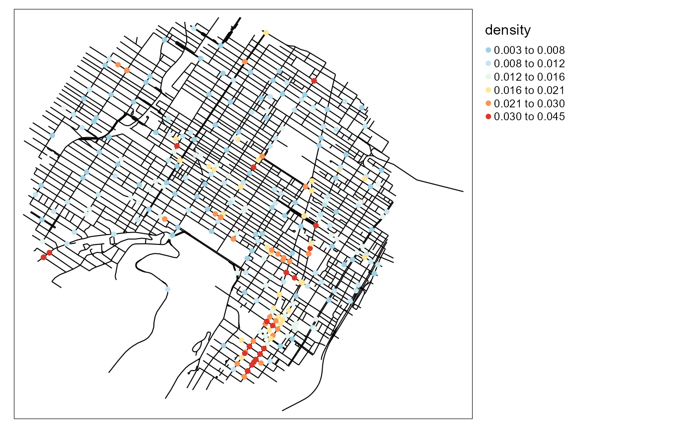
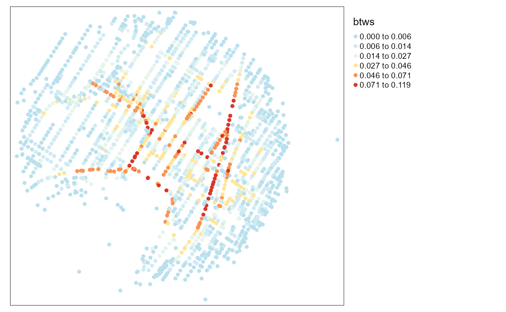
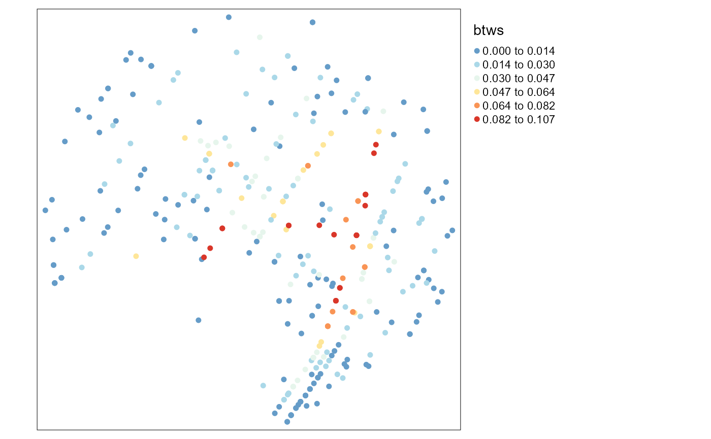
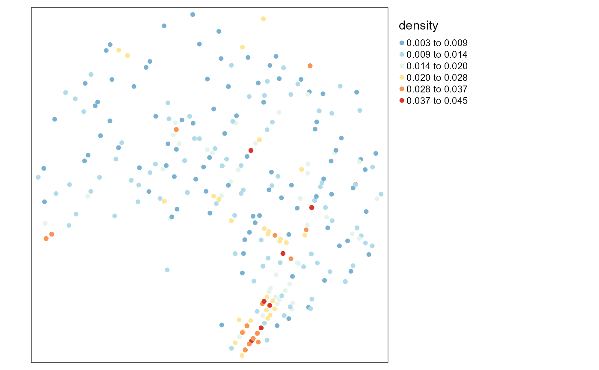

The goal of this vignette is to present how several functions in spNetwork can be used to build graphs and to analyze it.
To illustrate the process, we give a full example with the calculation of the correlation between the centrality of bike accidents in the Montreal network and the NKDE density calculated at each accident point. Here are the steps we will follow to perform this analysis:
Let us start by loading some data.
# first load data and packages
library(sp)
library(maptools)
library(rgeos)
library(spNetwork)
library(raster)
library(tmap)
library(FNN)
networkgpkg <- system.file("extdata", "networks.gpkg",
package = "spNetwork", mustWork = TRUE)
eventsgpkg <- system.file("extdata", "events.gpkg",
package = "spNetwork", mustWork = TRUE)
mtl_network <- rgdal::readOGR(networkgpkg,layer="mtl_network",verbose = FALSE)
bike_accidents <- rgdal::readOGR(eventsgpkg,layer="bike_accidents", verbose = FALSE)
# then plotting the data
plot(mtl_network)
plot(bike_accidents,add=T,col='red',pch = 19)This step is easy to perform with the basic functions of spNetwork. For the sake of simplicity, we select an arbitrary bandwidth of 300m and use the discontinuous kernel.
# calculating the density values
densities <- nkde(mtl_network,
events = bike_accidents,
w = rep(1,nrow(bike_accidents)),
samples = bike_accidents,
kernel_name = "quartic",
bw = 300, div= "bw",
method = "discontinuous", digits = 2, tol = 0.5,
grid_shape = c(1,1), max_depth = 8,
agg = 5,
sparse = TRUE,
verbose = FALSE)
bike_accidents$density <- densities * 1000
# mapping the density values
tm_shape(mtl_network) +
tm_lines(col = "black") +
tm_shape(bike_accidents) +
tm_dots(col = "density", style = "kmeans",
n = 6, size = 0.1, palette = "-RdYlBu")+
tm_layout(legend.outside = TRUE) 
For this step, we will use the function snapPointsToLines2. It is mainly based on the function snapPointsToLines from maptools but can be used for bigger datasets. Note that we create two index columns: OID for the accidents’ location and LineID for the network lines.
We will also start by aggregating the points that are too close to each other. We will aggregate all the points that are within a 5 metres radius.
bike_accidents$weight <- 1
agg_points <- aggregate_points(bike_accidents, maxdist = 5)
agg_points$OID <- 1:nrow(agg_points)
mtl_network$LineID <- 1:nrow(mtl_network)
snapped_accidents <- snapPointsToLines2(agg_points,
mtl_network,
"LineID")The next step is to use the new points to cut the lines of the network.
new_lines <- split_lines_at_vertex(mtl_network,
snapped_accidents,
snapped_accidents$nearest_line_id,
mindist = 0.1)We can now build the graph from the cut lines.
new_lines$OID <- 1:nrow(new_lines)
new_lines$length <- gLength(new_lines, byid = TRUE)
graph_result <- build_graph(new_lines, 2, "length", attrs = TRUE)The graph can be used with the library igraph. We will calculate here the betweenness centrality of each node in the graph.
btws <- igraph::betweenness(graph_result$graph, directed = FALSE,
normalized = TRUE)
vertices <- graph_result$spvertices
vertices$btws <- btws
# mapping the betweenness
tm_shape(vertices) +
tm_dots(col = "btws", style = "kmeans",
n = 6, size = 0.1, palette = "-RdYlBu")+
tm_layout(legend.outside = TRUE) 
The last step is to find for each of the original points its corresponding node. We will do it by using the k nearest neighbours approach with the package FNN.
# first: nn merging between snapped points and nodes
xy1 <- coordinates(snapped_accidents)
xy2 <- coordinates(vertices)
corr_nodes <- get.knnx(xy2, xy1, k=1)
snapped_accidents$btws <- vertices$btws[corr_nodes[[1]]]
# second: nn merging between original points and snapped points
xy1 <- coordinates(bike_accidents)
xy2 <- coordinates(snapped_accidents)
corr_nodes <- get.knnx(xy2, xy1, k=1)
bike_accidents$btws <- snapped_accidents$btws[corr_nodes[[1]]]
# mapping the results
tm_shape(bike_accidents) +
tm_dots(col = "btws", style = "kmeans",
n = 6, size = 0.1, palette = "-RdYlBu")+
tm_layout(legend.outside = TRUE)
tm_shape(bike_accidents) +
tm_dots(col = "density", style = "kmeans",
n = 6, size = 0.1, palette = "-RdYlBu")+
tm_layout(legend.outside = TRUE) 
And finally, we can calculate the correlation between the two variables !
cor.test(bike_accidents$density, bike_accidents$btws)##
## Pearson's product-moment correlation
##
## data: bike_accidents$density and bike_accidents$btws
## t = 2.0759, df = 345, p-value = 0.03865
## alternative hypothesis: true correlation is not equal to 0
## 95 percent confidence interval:
## 0.005855796 0.213851736
## sample estimates:
## cor
## 0.1110699We can see that there is no correlation between the two variables. There is no association between the degree of centrality of an accident location in the network and the density of accidents in a radius of 300m at that location.